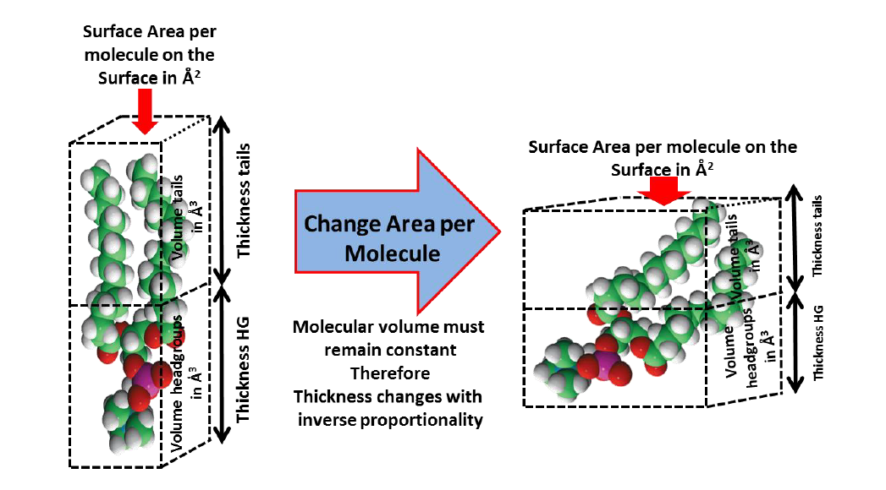

4. Fitting a Custom Model of the Bilayer by Area per Molecule#
In the previous section different layers arising from the same molecular species are fitted in an unconstrained manner. This can cause some ambiguity in the analysis as there can be differing total molar amounts of head and tail components in the resolved structural data.
A better approach is to couple these parameters together using a known shared parameter. In most cases this will be area of the surface occupied by the molecule (i.e. Area Per Molecule). As each lipid head and tail, being a part of the same molecule, will occupy the same 2-dimensional area of the sample surface. This area will be related to the thickness of the sample by:
The volume of the tail and head groups are linked to the sum of the atomic volumes which make up the molecule and therefore will not change (within a given phase). The thickness is inversely correlated to the area per molecule and therefore only a single parameter for both the head and tail groups needs to be fitted, that is the area per molecule at the surface. Below is a diagrammatic representation of this concept:

In the example we will use the molecular volumes of the head and tail components of DMPC to construct a model which fits the bilayer at the silicon water interface by four parameters only. That is, the area per molecule, the total bilayer hydration (i.e. presence of defects across the surface) and the headgroup hydration (i.e. water bound to the hydrophilic headgroups) and bilayer roughness.
For this section of the practical you will edit a custom area per molecule model, completing parts of the code which are missing.
Starting the project
In RasCAL-2, click on Import Existing Project and browse to the tutorial data folder named Rascal 2 Practical Student and select the folder named Part 4 Scripted APM bilayer and select open, then click the Load button
You will see five sets of data, Contrasts 1, 2 describe the SiO2 layer at the interface only, while 3, 4 and 5 describe the same surface coated with a DMPC supported lipid bilayer in D2O, SMW and H2O solution respectively. Currently however, the model does not describe the DMPC bilayer structure. You will need to add this!
The relationship between layer thickness, component volume and area per molecule is:
And component volume, scattering length and scattering length density is:
The volume and the scattering lengths (\(\sum b\)) of each of the interfacial components are known. By fitting the experimental reflectivity data we can determine the interfacial lipid area per molecule and layer thicknesses.
The SLD of the lipid headgroups and tails can be calculated using priori information, using this, the solution is present in each of the headgroup and tail regions of the bilayer can be determined.
There is a differential in solution content within the headgroups and tails. As the tails will only have water content through defects while the headgroups have hydration waters as well as water present due to defects. The model built during this part of the exercise will discriminate between these hydration types.
Edit the model and then edit the custom model i.e. Click Edit Project, navigate to the Custom Files tab and click Edit File. You will find the following incomplete code to describe the interfacial layer structure:
import numpy as np
def custom_bilayer_DMPC(params, bulk_in, bulk_out, contrast):
## Parameters to Fit
sub_rough = params[0]
oxide_thick = params[1]
oxide_hydration = params[2]
HG_bound_waters = params[3]
#DMPC_APM = params[4]
#Bilayer_roughness = params[5]
#Bilayer_hydration = params[6]
## We have a constant SLD for the bilayer
oxide_SLD = 3.41e-6
## Known Volume in Angstrom cubed
DMPC_HG_Volume = 320.9
DMPC_Tails_Volume = 783.3
Water_Volume = 30.4
##Known Scattering Lengths
DMPC_HG_SL = 6.41e-4
DMPC_Tails_SL = -3.08e-4
H2O_SL = -1.4e-5
D2O_SL = 2e-4
## Relate HG Bound Waters to SL and Volume
HG_Waters_D2O_SL = HG_bound_waters * D2O_SL
HG_Waters_H2O_SL = HG_bound_waters * H2O_SL
Headgroup_water_volume = HG_bound_waters * Water_Volume
## Add to HG volumes, SLs and Calculate nSLD
#Volume_HG = ? + ? ##The headgroup volume plus the water volume
#DMPC_HG_SL_D2O = ? + ? ##Clue it’s the same as before but with the water added
#DMPC_HG_SL_H2O = ? + ?
#SLD_HG_D2O = DMPC_HG_SL_D2O/Volume_HG
#SLD_HG_H2O = DMPC_HG_SL_H2O/Volume_HG
#SLD_HG_SMW = (0.38 * SLD_HG_D2O) + (0.62 * SLD_HG_H2O)
#Tails_SLD = DMPC_Tails_SL/DMPC_Tails_Volume
## Thicknesses
## Calculate the thickness from the HG volume over the lipid Area per
## molecule
#Headgroup_thickness = Volume_HG/DMPC_APM
#Tails_thickness = DMPC_Tails_Volume/DMPC_APM
## Now construct your layers adding in a single roughness parameter and a
## parameter for defects (hydration)
oxide = [oxide_thick, oxide_SLD, sub_rough, oxide_hydration, 2]
#Head_D2O = [?, ?, ?, ?, 2]
#Head_H2O = [?, ?, ?, ?, 2]
#Head_SMW = [?, ?, ?, ?, 2]
#Tail = [?, ?, ?, ?, 2]
## Add your layer defined above to the layer stack
match contrast:
case 1 | 2:
output = np.array([oxide])
case 3:
output = np.array([oxide])
case 4:
output = np.array([oxide])
case 5:
output = np.array([oxide])
return output, sub_rough
In this code you will notice there are single commented lines (#) and double commented (##) lines. The double commented lines are notes and hints while the single commented lines are the lines of code you must complete by the replacing the questions marks (?) with the correct information.
The parameters you wish to fit are commented out in the parameters section of the code. These are:
HG_bound_waters = params[3]
DMPC_APM = params[4]
Bilayer_roughness = params[5]
Bilayer_hydration = params[6]
These also need to be added to the parameter list in RasCal. Suitable parameter ranges for these are:
HG_bound_waters: lower = 0 waters, upper = 10 waters.DMPC_AreaPerMolecule: lower = 0 \(\mathring{A}`2, Upper = 100 :math:\)mathring{A}`2.Bilayer_roughness: lower = 2 \(\mathring{A}\), upper = 10 \(\mathring{A}\).Bilayer_hydration: lower = 0%, upper = 100%.
Hint
Add these parameters to the list in RasCal
The code below the fitted parameters details the relationship between these parameters and the parameters which define the layers i.e. the layer parameters SLD, thickness, roughness and hydration.
Once you have uncommented and placed the correct info in all the lines of code you must add the bilayer structure to cases 3, 4 and 5.
Hint
Input the following layer structure in contrast (Case) 2 and 3 once you have determined the relationship between area per molecule, thickness and SLD and defined your layers:
Case 3:
output = ([Oxide, HEADFGROUP_D2O, TAIL, TAIL, HEADGROUP_D2O])
Case 4:
output = ([Oxide, HEADFGROUP_SMW, TAIL, TAIL, HEADGROUP_SMW])
Note
Here we define the tails as two layers rather than a single layer (as was done previously).